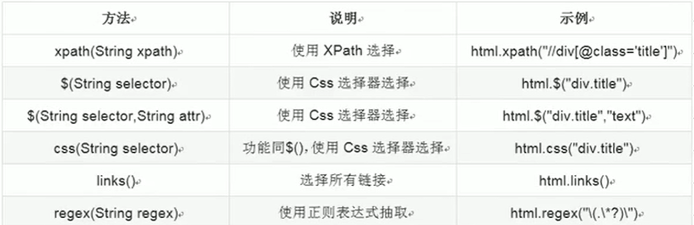

创建Maven工程，并加入依赖
<!--WebMagic核心包-->
<dependency>
<groupId>us.codecraft</groupId>
<artifactId>webmagic-core</artifactId>
<version>0.7.4</version>
</dependency>
<1--WebMagic扩展包-->
<dependency>
<groupId>us.codecraft</groupId>
<artifactId>webmagic-extension</artifactId>
<version>0.7.4</version>
</dependency>
加入配置文件
WebMagic使用sif4j-log4j12作为sif4j的实现。
添加log4j.properties配置文件
log4j.rootLogger=INFo,A1
log4j.appender.A1=org.apache.log4j.ConsoleAppender
log4j.appened.A1.layout=org.apache.log4j.PatternLayout
log4j.appender.A1.layout.ConversionPattern=%-d{yyyy-MM-dd HH:mm:ss,SSS} {%t} {%c}-{%p} %m%n
第一个简单案例
创建JobProcessor类实现PageProcessor接口
public class JobProcessor implements PageProcessor{
private Site site=Site.me()
.setCharset("utf-8") //设置编码
.setTimeOut(10000) //设置超时时间，单位是ms
.setRetrySleepTime(3000) //设置重试的间隔时间
.setSleepTime(3) //设置重置次数
;
//解析页面
public void process(Page page){
//解析返回的数据Page，并把解析的结果放到ResultItems中
page.putField("div",getHtml().css("div.mt h2").all());
}
public Site getSite(){
return site;
}
public static void main(String[] args){
Spider.create(new JobProcessor())
.addUrl("")//需要解析的地址
.addPipeline(new FilePipeline("本地文件路径"))
.thread(5)//设置5个线程处理
.setScheduler(new QueueScheduler().setDuplicateRemover(new BloomFilterDuplicateRemover(10000000)))//设置布隆去重过滤器，指定最多对1000万条数据进行去重操作
.run();//执行爬虫
}
}
实现PageProcessor
抽取元素Selectable
WebMagic里主要使用了三种抽取技术：Xpath、正则表达式和CSS选择器。另外对于JSON格式的内容，可使用JsonPath进行解析。
1、XPath
以下是获取属性class=mt的div标签，里面的h1标签的内容
page.getHtml().xpath("//div[@class=mt]/h1/text()")
2、CSS选择器
3、正则表达式
正则表达式是一种通用的文本抽取语言。
4、链式抽取


获取链接
page.addTargetRequests(page.getHtml().css(div#news_div).links()regex(".*9$").all());
page.putField("url",page.getHtml().css("div.mt h1").all());
爬虫的配置、启动和终止
Spider
Spider是爬虫对象的入口。在启动爬虫之前，需要使用一个PageProcessor创建一个Spider对象，然后使用run()进行启动。


爬虫配置Site
Site.me()可以对爬虫进行一些配置，包括编码、抓取间隔、超时时间、重试次数。


Scheduler组件
Scheduler是WebMagic中进行URL管理的组件。一般来说，Scheduler包括两个作用：
1、对待抓取的URL队列进行管理。
2、对已抓取的URL进行去重。


三种去重方式：